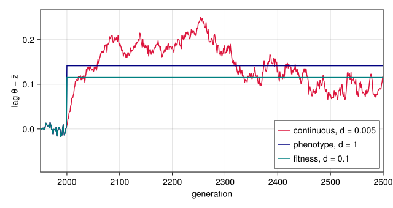
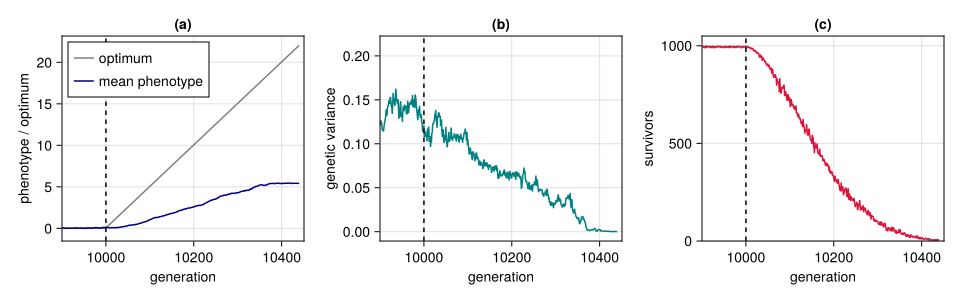
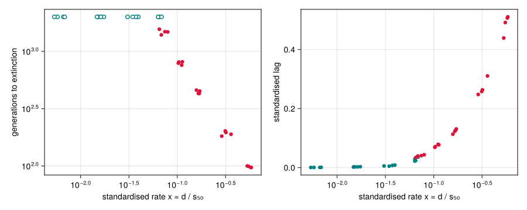
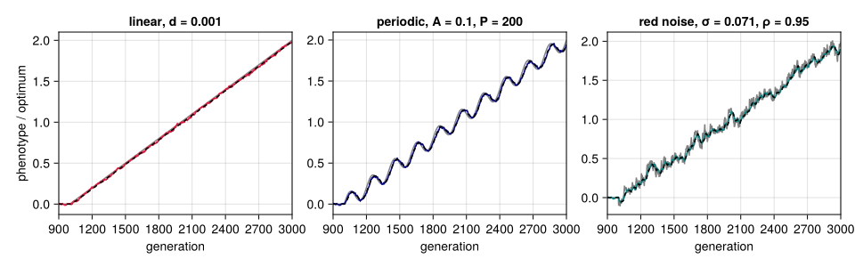
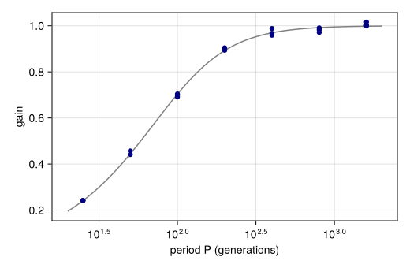

Adaptation to a moving optimum
Simon Frost
- Overview
- Setup
- Three ways to move the optimum
- Anatomy of an extinction
- The paper’s measures
- How long populations last
- Fluctuating optima
Overview
The paper asks how fast an environment can change before a population that adapts to it goes extinct (Pagel et al. 2025). Its experiments move the optimum of the fitness function by a fixed amount every generation and record how the population responds. This vignette looks at the ways the optimum can move, follows one population to extinction, defines the measures the paper uses to summarise a run, and shows how the time to extinction depends on the rate of change. The theory behind the experiment goes back to Lynch and Lande (Lynch and Lande 1993) and Bürger and Lynch (Bürger and Lynch 1995): a population follows a moving optimum with a lag, and the lag it can sustain is limited by its genetic variance and by how strongly selection acts.
Setup
using QTLSim
using CairoMakie, Printf, Statistics
CairoMakie.activate!(type = "png")Three ways to move the optimum
From generation MoveFitnessSDGen on, the optimum $\theta$ is updated at the start of every generation, in one of three ways chosen by MoveType:
:continuousmoves it by a fixed amount, $\theta \leftarrow \theta + d$, with $d$ given byMoveFitnessSD. This is a steadily changing environment, and it is what the paper uses.:phenotyperesets it to the current mean phenotype plus $d$ phenotypic standard deviations, $\theta = \bar z + d\sqrt{V_P}$.:fitnessresets it to the mean plus $d$ fitness-function widths, $\theta = \bar z + d\omega$.
The last two keep the optimum a fixed distance ahead of the population, so the lag $\theta - \bar z$ is set by construction and the population can never fall behind. Only the continuous move lets the lag evolve.
p = Params(PopSize = 1000, Ploidy = 2, NoQTL = 100, NoGenerations = 2600,
PhenotypeVar = 0.02, Heritability = 0.4, MutationScalar = 0.004,
MutationRatePerGamete = 1e-4, RecombPoissonMean = 3.0, MoveFitnessSDGen = 2000)
runs = [(name, simulate(Params(p; MoveType = type, MoveFitnessSD = d); seed = 1))
for (name, type, d) in (("continuous, d = 0.005", :continuous, 0.005),
("phenotype, d = 1", :phenotype, 1.0),
("fitness, d = 0.1", :fitness, 0.1))]
nothingfig = Figure(size = (640, 340))
ax = Axis(fig[1, 1], xlabel = "generation", ylabel = "lag θ − z̄", limits = ((1950, 2600), nothing))
for ((name, r), c) in zip(runs, (:crimson, :navy, :teal))
lines!(ax, r.gen, r.theta .- r.pheno_mean, color = c, label = name)
end
axislegend(ax, position = :rb)
fig
Figure 1: The lag θ − z̄ between the optimum and the mean phenotype after the optimum starts moving at generation 2000. The phenotype and fitness moves hold the lag at √V_P·d and ω·d; under the continuous move the lag grows until the response to selection matches the rate of change.
Anatomy of an extinction
The paper’s populations first spend 10,000 generations under stabilising selection and then face a continuously moving optimum. Here is one such population, with parameters near the middle of the paper’s ranges, followed until it dies out (compare the paper’s Supplementary Figure S3).
paperlike = Params(PopSize = 1000, Ploidy = 2, NoQTL = 100, NoGenerations = 12_000,
PhenotypeVar = 0.022, Heritability = 0.32, MutationScalar = 0.004,
MutationRatePerGamete = 1e-4, RecombPoissonMean = 3.0, InitFitnessSD = 5.0,
MoveFitnessSDGen = 10_000, MoveType = :continuous)
ex = simulate(Params(paperlike; MoveFitnessSD = 0.05); seed = 3)
(extinct = ex.extinct, extinct_generation = ex.extinct_gen)(extinct = true, extinct_generation = 10441)window = (9_900, ex.extinct ? ex.extinct_gen + 10 : 12_000)
fig = Figure(size = (960, 300))
ax1 = Axis(fig[1, 1], xlabel = "generation", ylabel = "phenotype / optimum", title = "(a)",
limits = (window, nothing))
lines!(ax1, ex.gen, ex.theta, color = :gray, label = "optimum")
lines!(ax1, ex.gen, ex.pheno_mean, color = :navy, label = "mean phenotype")
axislegend(ax1, position = :lt)
ax2 = Axis(fig[1, 2], xlabel = "generation", ylabel = "genetic variance", title = "(b)",
limits = (window, nothing))
lines!(ax2, ex.gen, ex.geno_var, color = :teal)
ax3 = Axis(fig[1, 3], xlabel = "generation", ylabel = "survivors", title = "(c)",
limits = (window, (0, 1050)))
lines!(ax3, ex.gen, ex.nsurv, color = :crimson)
for ax in (ax1, ax2, ax3); vlines!(ax, [10_000], color = :black, linestyle = :dash); end
fig
Figure 2: One population after the optimum starts moving at generation 10,000 (dashed line). (a) The mean phenotype falls ever further behind the optimum. (b) Genetic variance is eroded as survival collapses. (c) The number of individuals surviving selection each generation; the population is refilled to 1000 by the survivors’ offspring until fewer than two survive.
The paper’s measures
The paper summarises each run by a handful of numbers, all measured in units of the phenotypic standard deviation so that populations with different variances can be compared. With the move starting at generation $g_0$:
- Generations to extinction $T$: the number of generations of directional selection until the population dies, counting the generation in which it dies.
- 50% mortality: the first generation after the move at which the number of survivors is closest to $N/2$; $T_{50}$ counts generations to it in the same way as $T$. The phenotypic standard deviation $s_{50}$ at that generation is the unit for everything else.
- Standardised environmental change $x = d / s_{50}$.
- Standardised rate of phenotypic change: how far the mean phenotype moved, per generation, in units of $s_{50}$, either until extinction or until 50% mortality.
- Standardised lag: $x$ minus the rate of phenotypic change to extinction, the amount per generation by which the population falls further behind.
The function below computes them from a run, following the conventions of the paper’s results table, which counts generations from one (so its “generation 10,000” is the last generation before the move). The replication vignette checks it against the table itself.
function paper_measures(o, p::Params)
g0, N, d = p.MoveFitnessSDGen, p.PopSize, p.MoveFitnessSD
sd = sqrt.(o.pheno_var)
i0 = findfirst(==(g0 - 1), o.gen) # last generation before the move
post = findall(>=(g0), o.gen)
k = isempty(post) ? lastindex(o.gen) : post[argmin(abs.(o.nsurv[post] .- N ÷ 2))]
T = o.extinct ? o.gen[end] + 2 - g0 : length(post) # the last record precedes the dying generation
T50 = o.gen[k] + 2 - g0
x = d / sd[k]
rate = (o.pheno_mean[end] - o.pheno_mean[i0]) / T / sd[k]
rate50 = (o.pheno_mean[k] - o.pheno_mean[i0]) / T50 / sd[k]
(; T, survived = !o.extinct, T50, sd50 = sd[k], x, rate, rate50, lag = x - rate)
end
paper_measures(ex, Params(paperlike; MoveFitnessSD = 0.05))(T = 442, survived = false, T50 = 154, sd50 = 0.28499912426570245, x = 0.17543913557216897, rate = 0.04213412512639793, rate50 = 0.03911414122609284, lag = 0.13330501044577103)How long populations last
Now the same population faces a range of rates, four replicates each, each run allowed up to 2000 generations of directional selection. Runs are independent, so they are spread over threads.
rates = [0.002, 0.005, 0.01, 0.015, 0.02, 0.03, 0.05, 0.1, 0.2]
jobs = [(d, rep) for d in rates for rep in 1:4]
res = Vector{Any}(undef, length(jobs))
Threads.@threads for k in eachindex(jobs)
d, rep = jobs[k]
q = Params(paperlike; MoveFitnessSD = d)
res[k] = (; d, paper_measures(simulate(q; seed = 100k + rep), q)...)
end
for d in rates
rs = filter(r -> r.d == d, res)
@printf("d = %.3f x ≈ %.3f survived %d of 4 median T = %s\n", d,
median(r.x for r in rs), count(r -> r.survived, rs),
all(r -> r.survived, rs) ? "> 2000" : string(round(Int, median(r.T for r in rs))))
endd = 0.002 x ≈ 0.006 survived 4 of 4 median T = > 2000
d = 0.005 x ≈ 0.016 survived 4 of 4 median T = > 2000
d = 0.010 x ≈ 0.036 survived 4 of 4 median T = > 2000
d = 0.015 x ≈ 0.064 survived 4 of 4 median T = > 2000
d = 0.020 x ≈ 0.071 survived 0 of 4 median T = 1481
d = 0.030 x ≈ 0.107 survived 0 of 4 median T = 798
d = 0.050 x ≈ 0.167 survived 0 of 4 median T = 440
d = 0.100 x ≈ 0.316 survived 0 of 4 median T = 192
d = 0.200 x ≈ 0.564 survived 0 of 4 median T = 98fig = Figure(size = (900, 360))
ax1 = Axis(fig[1, 1], xscale = log10, yscale = log10, xlabel = "standardised rate x = d / s₅₀",
ylabel = "generations to extinction")
ax2 = Axis(fig[1, 2], xscale = log10, xlabel = "standardised rate x = d / s₅₀",
ylabel = "standardised lag")
dead = filter(r -> !r.survived, res); alive = filter(r -> r.survived, res)
scatter!(ax1, [r.x for r in dead], [r.T for r in dead], color = :crimson)
scatter!(ax1, [r.x for r in alive], [r.T for r in alive], color = :white,
strokecolor = :teal, strokewidth = 1.5)
scatter!(ax2, [r.x for r in res], [r.lag for r in res],
color = [r.survived ? :teal : :crimson for r in res])
fig
Figure 3: Generations to extinction (left) and standardised lag (right) against the standardised rate of environmental change x for one parameter set. Open circles (left) and teal points (right) are populations still alive after 2000 generations of directional selection; the others died.
Populations that survive keep pace: their lag per generation is close to zero. Once the environment moves faster than they can respond, the lag grows every generation and the population dies, sooner the faster the change. For this parameter set every population survived 2000 generations at rates up to about 6% of a phenotypic standard deviation per generation, and every one died at about 7% and above. Surviving 2000 generations is not surviving indefinitely, though: the paper ran its populations for up to 240,000 generations, and its estimate of the sustainable rate, about 3% of a standard deviation per generation, comes from the populations that lasted that long. The replication vignette maps the boundary across the paper’s whole parameter space.
Fluctuating optima
Field environments change noisily, not along a straight line. Two more move types, which QTSim lacks, let the optimum fluctuate around a linear trend of $d$ per generation, starting from its value $\theta_0$ at generation $t_0$ = MoveFitnessSDGen:
:periodic: $\theta_t = \theta_0 + d(t - t_0) + A \sin(2\pi (t - t_0)/P)$, with amplitude $A$ =MoveAmplitudeand period $P$ =MovePeriod;:red_noise: $\theta_t = \theta_0 + d(t - t_0) + \varepsilon_t$, where $\varepsilon$ is stationary AR(1) noise with standard deviation $\sigma$ =MoveNoiseSDand autocorrelation $\rho$ =MoveAutocorr: $\varepsilon_t = \rho\,\varepsilon_{t-1} + \sigma\sqrt{1-\rho^2}\,\xi_t$.
Once its genetic variance has settled, a large population’s mean follows the optimum as $\bar z_{t+1} = \bar z_t + \beta(\theta_t - \bar z_t)$, with $\beta = V_G/(V_G + V_s)$ and $V_s = \omega^2 + V_E$. This linear filter tracks a slow cycle with a delay of about $1/\beta$ generations, damps a fast one, and chases noise that has already moved on. periodic_response, red_noise_lag_var and expected_lag2 give its steady response (Bürger and Lynch 1995). A population under strong selection ($\omega = 0.3$, one locus) shows it in a few thousand generations. The three moves below share the trend, and the cycle and the noise have the same variance, $A^2/2 = \sigma^2$.
import Catlab # run_moments is part of the categorical layer
c = Params(PopSize = 1000, Ploidy = 2, NoQTL = 1, NoGenerations = 3000, PhenotypeVar = 0.02,
Heritability = 0.5, MutationScalar = 0.02, MutationRatePerGamete = 0.5,
InitFitnessSD = 0.3, MoveFitnessSDGen = 1000, MoveFitnessSD = 0.001)
fluct = [("linear, d = 0.001", Params(c; MoveType = :continuous)),
("periodic, A = 0.1, P = 200", Params(c; MoveType = :periodic, MoveAmplitude = 0.1, MovePeriod = 200.0)),
("red noise, σ = 0.071, ρ = 0.95", Params(c; MoveType = :red_noise, MoveNoiseSD = 0.1 / √2,
MoveAutocorr = 0.95))]
frun = [(name, q, simulate(q; seed = 7)) for (name, q) in fluct]
nothingfig = Figure(size = (960, 300))
for (j, ((name, q, r), col)) in enumerate(zip(frun, (:crimson, :navy, :teal)))
ax = Axis(fig[1, j], xlabel = "generation", ylabel = j == 1 ? "phenotype / optimum" : "",
title = name, limits = ((900, 3000), nothing))
m = q.MoveType === :red_noise ? run_moments(q; optimum = r.theta) : run_moments(q)
lines!(ax, r.gen, r.theta, color = :gray)
lines!(ax, r.gen, r.pheno_mean, color = col)
lines!(ax, m.gen, m.pheno_mean, color = :black, linestyle = :dash)
end
fig
Figure 4: The optimum (gray) and the mean phenotype (colour) under three moves that share a trend of 0.001 per generation from generation 1000. Dashed: the Gaussian prediction of the moments lowering (run_moments), given the run’s own optimum for red noise.
Averaged over eight runs each and over generations 1500 to 2999, the mean squared lag is close to the prediction at the runs’ genetic variance. Drift adds about the same small amount to each, because it moves the mean at random, so it shows most in the small lag behind the steady trend. The load, the loss of log mean fitness to the lag, is lag_load.
win(r) = findall(g -> 1500 <= g <= 2999, r.gen)
for (name, q) in fluct
rs = [simulate(q; seed = s) for s in 1:8]
lag2 = mean(mean((r.theta[win(r)] .- r.pheno_mean[win(r)]) .^ 2) for r in rs)
VG = mean(mean(r.geno_var[win(r)]) for r in rs)
surv = mean(mean(r.nsurv[win(r)]) for r in rs)
@printf("%-32s mean squared lag %.5f (theory %.5f) load %.4f survivors %.0f\n",
name, lag2, expected_lag2(q; VG), lag_load(q; VG), surv)
endlinear, d = 0.001 mean squared lag 0.00036 (theory 0.00027) load 0.0013 survivors 916
periodic, A = 0.1, P = 200 mean squared lag 0.00146 (theory 0.00137) load 0.0064 survivors 911
red noise, σ = 0.071, ρ = 0.95 mean squared lag 0.00282 (theory 0.00268) load 0.0126 survivors 905At the same variance of the optimum, the cycle of period 200 costs more than the steady trend but less than noise with a correlation time of about 20 generations, which changes faster than the population can follow. The gain of the response, the ratio of the mean’s amplitude to the optimum’s, falls as the period shortens:
periods = [25.0, 50.0, 100.0, 200.0, 400.0, 800.0, 1600.0]
gjobs = [(P, s) for P in periods for s in 1:3]
gres = Vector{Any}(undef, length(gjobs))
Threads.@threads :greedy for k in eachindex(gjobs)
P, s = gjobs[k]
q = Params(c; MoveType = :periodic, MoveFitnessSD = 0.0, MoveAmplitude = 0.1, MovePeriod = P,
NoGenerations = 4200)
r = simulate(q; seed = 50 + k)
w = findall(>=(1000 + 1200), r.gen); t = r.gen[w] .- 1000
X = hcat(sin.(2π .* t ./ P), cos.(2π .* t ./ P), ones(length(t)))
a, b, _ = X \ r.pheno_mean[w]
gres[k] = (; P, gain = hypot(a, b) / 0.1, VG = mean(r.geno_var[w]))
end
VGg = mean(r.VG for r in gres)
fig = Figure(size = (520, 340))
ax = Axis(fig[1, 1], xscale = log10, xlabel = "period P (generations)", ylabel = "gain")
Ps = exp.(range(log(20), log(2000), 100))
lines!(ax, Ps, [periodic_response(P; VG = VGg, Vs = selection_variance(c)).gain for P in Ps], color = :gray)
scatter!(ax, [r.P for r in gres], [r.gain for r in gres], color = :navy)
fig
Figure 5: The gain of the mean phenotype’s response to a periodic optimum (A = 0.1, no trend) against the period, in three runs per period (points), and the linear filter’s prediction at the runs’ genetic variance (line).
Bürger, Reinhard, and Michael Lynch. 1995. “Evolution and Extinction in a Changing Environment: A Quantitative-Genetic Analysis.” Evolution 49 (1): 151–63. https://doi.org/10.1111/j.1558-5646.1995.tb05967.x.
Lynch, Michael, and Russell Lande. 1993. “Evolution and Extinction in Response to Environmental Change.” In Biotic Interactions and Global Change, edited by Peter M. Kareiva, Joel G. Kingsolver, and Raymond B. Huey. Sinauer.
Pagel, Mark, Jacob D. Gardner, and Andrew Meade. 2025. “Quantitative-Genetic Analysis of Directional Adaptation Suggests Low Maximum Sustainable Rates of Change in Agreement with Data from Field Populations.” Scientific Reports 15. https://doi.org/10.1038/s41598-025-24445-2.